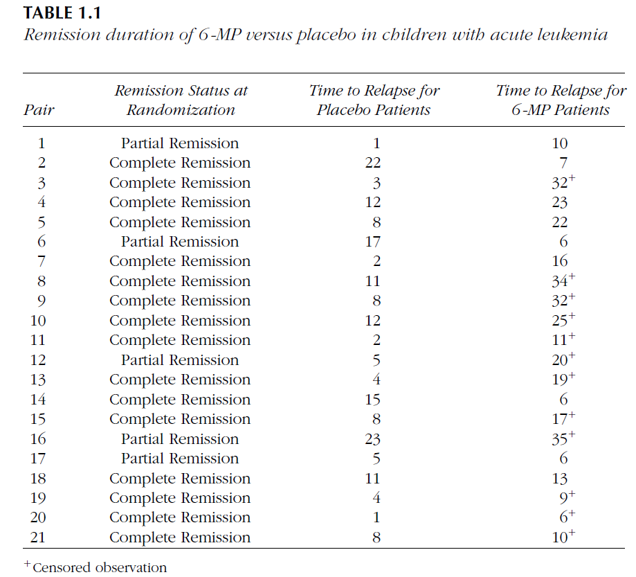

| Infection Time | Adult Induction Time | Child Induction Time |
|---|---|---|
| 0.00 | 5 | |
| 0.25 | 6.75 | |
| 0.75 | 5, 5, 7.25 | |
| 1.00 | 4.25, 5.75, 6.25, 6.5 | 5.5 |
| 1.25 | 4, 4.25, 4.75, 5.75 | |
| 1.50 | 2.75, 3.75, 5, 5.5, 6.5 | 2.25 |
| 1.75 | 2.75, 3, 5.25, 5.25 | |
| 2.00 | 2.25, 3, 4, 4.5, 4.75, 5, 5.25, 5.25, 5.5, 5.5, 6 | |
| 2.25 | 3, 5.5 | 3 |
| 2.50 | 2.25, 2.25, 2.25, 2.25, 2.5, 2.75, 3, 3.25, 3.25, 4, 4, 4 | |
| 2.75 | 1.25, 1.5, 2.5, 3, 3, 3.25, 3.75, 4.5, 4.5, 5, 5, 5.25, 5.25, 5.25, 5.25, 5.25 | 1 |
| 3.00 | 2, 3.25, 3.5, 3.75, 4, 4, 4.25, 4.25, 4.25, 4.75, 4.75, 4.75, 5 | 1.75 |
| 3.25 | 1.25, 1.75, 2, 2.75, 3, 3, 3.5, 3.5, 4.25, 4.5 | |
| 3.50 | 1.25, 2.25, 2.25, 2.5, 2.75, 2.75, 3, 3.25, 3.5, 3.5, 4, 4, 4.25, 4.5, 4.5 | 0.75 |
| 3.75 | 1.25, 1.75, 1.75, 2, 2.75, 3, 3, 3, 4, 4.25, 4.25 | 0.75, 1, 2.75, 3, 3.5, 4.25 |
| 4.00 | 1, 1.5, 1.5, 2, 2.25, 2.75, 3.5, 3.75, 3.75, 4 | 1 |
| 4.25 | 1.25, 1.5, 2, 2, 2.25, 2.5, 2.5, 2.5, 3, 3.5, 3.5 | 1.75 |
| 4.50 | 1, 1.5, 1.5, 1.5, 1.75, 2.25, 2.25, 2.5, 2.5, 2.5, 2.5, 2.75, 2.75, 2.75, 2.75, 3, 3, 3, 3.25, 3.25 | 3.25 |
| 4.75 | 1, 1.5, 1.5, 1.5, 1.75, 1.75, 2, 2.25, 2.75, 3, 3, 3.25, 3.25, 3.25, 3.25, 3.25, 3.25 | 1, 2.25 |
| 5.00 | 0.5, 1.5, 1.5, 1.75, 2, 2.25, 2.25, 2.25, 2.5, 2.5, 3, 3, 3 | 0.5, 0.75, 1.5, 2.5 |
| 5.25 | 0.25, 0.25, 0.75, 0.75, 0.75, 1, 1, 1.25, 1.25, 1.5, 1.5, 1.5, 1.5, 2.25, 2.25, 2.5, 2.5, 2.75 | 0.25, 1, 1.5 |
| 5.50 | 1, 1, 1, 1.25, 1.25, 1.75, 2, 2.25, 2.25, 2.5 | 0.5, 1.5, 2.5 |
| 5.75 | 0.25, 0.75, 1, 1.5, 1.5, 1.5, 2, 2, 2.25 | 1.75 |
| 6.00 | 0.5, 0.75, 0.75, 0.75, 1, 1, 1, 1.25, 1.25, 1.5, 1.5, 1.75, 1.75, 1.75, 2 | 0.5, 1.25 |
| 6.25 | 0.75, 1, 1.25, 1.75, 1.75 | 0.5, 1.25 |
| 6.50 | 0.25, 0.25, 0.75, 1, 1.25, 1.5 | 0.75 |
| 6.75 | 0.75, 0.75, 0.75, 1, 1.25, 1.25, 1.25 | 0.5, 0.75 |
| 7.00 | 0.75 | 0.75 |
| 7.25 | 0.25 | 0.25 |
Introducción al Análisis de Supervivencia
2025-06-01
Ejemplos de datos de supervivencia
A continuación se presentan algunos ejemplos de datos de supervivencia. Estos ejemplos fueron obtenidos de Klein & Moeshberger (1997).
Ejemplo de Duración de la remisión en un ensayo clínico para leucemia aguda
Duración de remisión de un ensayo clínico para leucemia aguda. Resultados de un ensayo clínico en donde se quería compara la efectividad de la droga \(6-MP\) versus placebo en 42 niños con leucemia aguda. El evento de inicio es remisión parcial de la enfermedad después de haber sido tratados con la droga prednisone. El evento de fin es recaída o muerte. La escala de medición es tiempo calendario en meses. Algunos individuos no presentaron el evento de fin al término del estudio. Estos casos son marcados con un + y son llamados censurados por la derecha. Más adelante los veremos con detalle.

Ejemplo de Transplante de médula ósea en pacientes con leucemia.
Transplante de médula es un procedimiento estándar en pacientes con leucemia aguda. La recuperación después del transplante es un proceso complejo. La prognosis para la recuperación puede depender de factores que se conocen al momento del transplante, como edad y sexo del paciente y donador, etapa de la enfermedad inicial, tiempo entre el diagnóstico y el transplante, etc. La prognosis final depende de cómo evoluciona el paciente después del transplante. Puede generar aversión o rechazo de la medula transplantada (GVHD), que el conteo de plaquetas se vuelva normal o desarrollar infecciones, etc. El transplante se considera fracaso cuando el paciente recae o muere.


Ejemplo Tiempos de muerte de adultos mayores residentes de un asilo.
Channing House es una casa de retiro en California. Datos con las edades de muerte de 462 individuos (97 hombres y 365 mujeres) que estuvieron en la residencia durante el periodo de enero de 1964 y julio de 1975. Se reportó la edad a la muerte o al momento en que se salían del asilo (en meses) y la edad a la que los individuos entraron al asilo. Estos datos son un ejemplo de truncamiento por la izquierda que más adelante veremos con detalle. Un individuo tiene que sobrevivir lo suficiente para estar en edad de entrar al asilo. Individuos que mueren previamente a la edad de retiro son excluidos del estudio.

Ejemplo Tiempo al primer uso de marihuana.
En este estudio a 191 estudiantes de preparatoria se les preguntó: ¿Cuál fue la primera vez que probaste la marihuana?. Las respuestas fueron, “la edad exacta a la que la probaron”, “nunca la he probado”, y “la probé pero no recuerdo cuando fue la primera vez”. En este último caso tenemos una censura por la izquierda. El evento de interés ha ocurrido en algún momento previo a la edad actual del estudiante!.
Tiempo a desarrollar sida.
Se reportan datos con tiempos de infección y de inducción para 258 adultos y 37 niños que fueron infectados con el virus del VIH y desarrollaron sida antes del 30 de junio de 1986. Los datos consisten de los tiempos (en años) desde que adultos fueron infectados por el virus por transfusión de sangre contaminada, y el tiempo de espera hasta el desarrollo de sida. Para la población pediátrica, los niños fueron infectados en útero o al nacer. El tiempo base de medición es el 1 de abril de 1978. En este estudio, sólo los individuos que han desarrollado sida antes del término del estudio son considerados. Individuos que no han desarrollado sida no son incluidos en el estudio. Este tipo de datos es llamado truncados por la derecha y más adelante los veremos con detalle.
La tasa de decaimiento de las funciones de supervivencia varía de acuerdo al riesgo de presentar el evento de fin. Eventos más riesgosos presentan una tasa de decaimiento mayor.

La función de riesgo es una función fundamental en análisis de supervivencia. Se le conoce también como la tasa de falla condicional en análisis de confiabilidad, tasa de mortalidad en demografía o función de intensidad en procesos estocásticos.
Función de riesgo: \(h(t) = f(t) / S(t)\)

Censura por la derecha
Como se mencionó anteriormente existen varias formas de generar censura. Estos mecanismos de censura son: censura tipo I, censura tipo II y censura aleatoria.
Censura Tipo I
La censura tipo I aplica cuando el tiempo de supervivencia se observa sólo si ese tiempo es menor a un tiempo predeterminado de censura. En caso contrario, la observación se considera censurada por la derecha. Los tiempos de censura pueden variar de individuo a individuo.
Sea \(C_i\) el tiempo de censura del individuo \(i\). El tiempo de fallo \(T_i\) se observa si \(T_i \le C_i\), de otra forma sólo conocemos que \(T_i > C_i\) . En presencia de censura por la derecha tendremos para cada individuo un par de observaciones \((t_i, \delta_i)\), donde \(t_i = min(T_i,C_i)\) y \(\delta_i = I_{(T_i \le C_i)}\), es decir \(\delta_i=1\) si \(T_i \le C_i\) o vale \(\delta_i =0\) si \(T_i \gt C_i\) es un evento censurado.
Importante: Una observación \(T_i\) es censurada por la derecha si \(T_i > C_i\) .
La forma más común en que ocurre la censura tipo I es cuando en un ensayo clínico, con humanos o con animales, comienza con un número fijo de individuos a los que se les administra un tratamiento. Debido a costos o a tiempos acotados, el investigador decide terminar el estudio antes de que todos los individuos presenten su evento de fin.
Ejemplo: Considérese un experimento animal a gran escala realizado en el Centro Nacional de Investigación Toxicológica (NCTR), en el que se administró a los ratones una dosis determinada de un carcinógeno. El objetivo del experimento era evaluar el efecto del carcinógeno sobre la supervivencia. Con este fin, se hizo un seguimiento de los ratones desde el inicio del experimento hasta su muerte o hasta que se alcanzó un tiempo de censura preestablecido, momento en el cual todos los ejemplares aún vivos fueron sacrificados (censurados).

Múltiples tiempos de censura: Considera un estudio con ratones, en donde para cada sexo, 200 ratones fueron aleatoriamente divididos en 4 grupos (niveles de dosis) y cada ratón fue monitoreado hasta la muerte o hasta un tiempo pre-especificado de sacrificio (42 o 104 semanas). Véase la siguiente figura para un esquema de este ensayo correspondiente a un sexo y un nivel de dosis. Se eligieron esos dos tiempos de sacrificio para reducir el costo de mantenimiento de los animales, al mismo tiempo que se obtenía información limitada sobre la supervivencia de los ratones de vida más prolongada.

Considérese otro caso, que origina censura de Tipo I, cuando los individuos ingresan al estudio en distintos momentos y el punto terminal del mismo está predeterminado por el investigador, de modo que los tiempos de censura son conocidos en el momento en que cada individuo se incorpora al estudio. En tales investigaciones (véase la siguiente Figura para un estudio hipotético con solo cuatro sujetos), cada individuo tiene su propio tiempo de censura específico y fijo. Esta forma de censura ha sido denominada censura de Tipo I generalizada.

Censura Tipo II
La censura tipo II ocurre cuando un estudio continua hasta que se presenta la falla de los primeros \(r<n\) individuos. En este caso, sólo los primeros \(r\) tiempos \(t_{(1)} \le t_{(2)} \le \cdots \le t_{(r)}\) son observados y los últimos \(n-r\) tiempos quedan censurados por la derecha.
La censura tipo II ocurre por lo general en pruebas de la duración de equipo. Todos los aparatos son puestos a funcionar al mismo tiempo y la prueba se termina cuando los primeros \(r\) de los \(n\) aparatos fallan.
Los experimentos con censura tipo II tienen la desventaja práctica de que el tiempo total del estudio \(T_{(r)}\) , que define el tiempo de censura \(C\), es aleatorio y desconocido al inicio del estudio. Por otro lado, puede reducir costos y tiempo debido a que pudiera necesitarse un tiempo muy largo en que todos los aparatos fallen.
De igual manera, una observación \(T_i\) será censurada por la derecha de tipo II si \(T_i > C\), con \(C=T_{(r)}\)
Censura Aleatoria
La censura aleatoria ocurre cuando los tiempos de censura \(C_i\) de cada paciente son consideradas variables aleatorias.
Por ejemplo, en un ensayo clínico, pacientes entran al estudio en momentos distintos y cada uno puede recibir un tratamiento distinto. La censura puede ocurrir por distintas causas que compiten al mismo tiempo, como muerte accidental, migración a otra población, muerte por otra causa distinta al evento de interés, salida del paciente del ensayo clínico, terminación del estudio, etc.
La censura aleatoria ocurre, por ejemplo, en estudios de pacientes con diálisis, donde falla del catéter es la primera razón de censura de los tiempos de infección. Otras razones de censura son muerte del paciente o que el hospital se rehuse a aceptar al paciente por falta de pago.
Si el mecanismo de censura aleatoria \(C_i\) es dependiente de los tiempos de falla \(T_i\), se le conoce como censura informativa, es decir, el tiempo de censura nos da información sobre los tiempos de fallo.
En caso de que el mecanismo de censura sea independiente del tiempo de fallo, se le conoce como censura no informativa y el tratamiento de este tipo de datos es igual a los de censura tipo I.